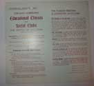

Index
|
Section I. A Discontented Freedom, 1833-1894
|
Subsection B. The
Commercial
City and the Democratic City
|
| Group 2: Social Settlements and the Chicago
Reform
Tradition |
A. Settlement Houses as Community
Forums
|
Item 1: “Safety of Free
Speech”
[pull quote] (NL#295-6)
|
 
|
Item 2: Free Economic
Discussion
for Wage Laborers, Chicago Commons, 1895 (NL#293)
|

|
Item 3: Lectures:
Movement
for the Emancipation of Labor; Social Teachings of the Bible,n.d.
(NL#306)
|
|
Item 4: CC Educational
Classes
and Social Clubs, 1900 (NL#303)
|

|
Item 5: Ben Tillet, Leader of
the
Great London Dock Strike, Lecture on the Condition of Labor (NL#308)
|
|
| use in reproduction:
“A Knotty Problem”,
1899
[photo of men at CC forum] (NL#299) |
|
Hull House and WTUL
|
|
[Foreign Language Press Survey items on open
forums,
see my notes??]
|
|
B.
Settlement leaders speak out
|
C.
Beyond
the Settlement House
|
|
|